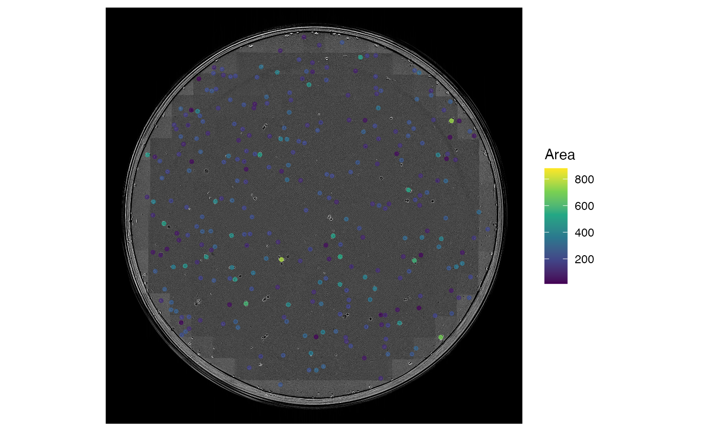
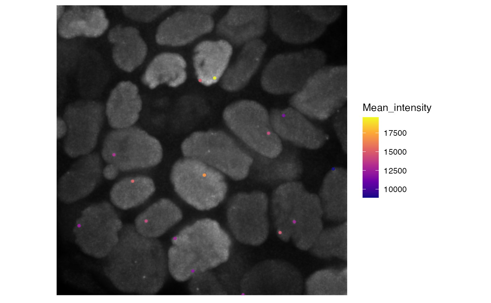
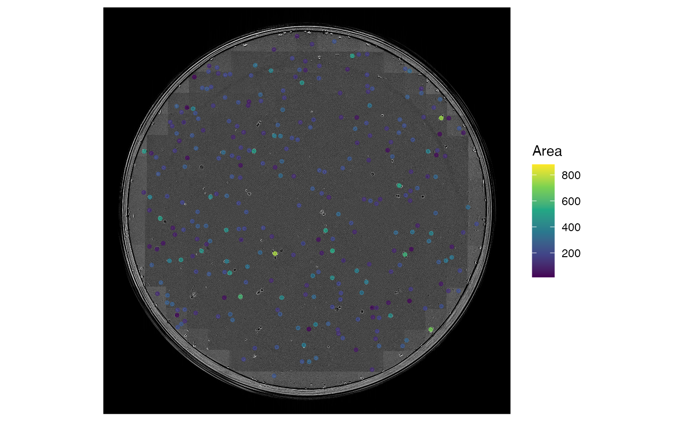
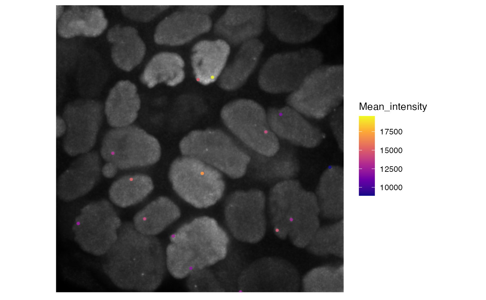

visustat_frame
visustat_frame.RdWith visustat_frame, continuous and discrete parameters can be mapped individually on color, shape and size for one timepoint.
Arguments
- df
dataframe of the form:
df(track, time, X, Y, (Z,) mapping_parameters, ...)- image
character: filename of image- stack
logical: default:FALSE, single image file provided if time-resolved imagestack is used, set:TRUE- image.depth
numeric: set image bit-depth; just important if Z-projections are calculated- image.normalize
logical: normalize image- frame
integer: frame to be mapped- tracks
vector: defining tracks to be displayed- par.map
character: specifying parameter indfto be visualized by color- par.shape
character: specifying parameter indfto be mapped on shape- par.display
display option for mapping; default:
TRUE, mapping is disable with:FALSE- par.max
numeric: defining upper range of color mapping- par.min
numeric: defining lower range of color mapping- par.unit
character: unit of the numeric mapped parameter- crop
logical: option for cropping images; default:FALSE- sub.img
logical: option for creating sub-images from specifiedtracksor pre-filtereddf; default:FALSE- sub.window
numeric: size of the sub-images in pixels- sub.col
numeric: number of columns in which sub-images are arranged- tracks.size
numeric: size of tracks- tracks.alpha
numeric: transparency of tracks- tracks.length
numeric: length of tracks (in frames)- tracks.label
logical: when sub.img is used, display or hide track label- tracks.label.x
numeric: when sub.img is used, set x-position of label- tracks.label.y
numeric: when sub.img is used, set y-position of label- points.size
numeric: size of points- points.alpha
numeric: transparency of points- points.stat
character: display statistic; default:'echo', for blurring; without blurring'identity'- points.shape
numeric: set shape from ggplot2 shape palette- axis.tick
numeric: axis ticks in px- axis.display
logical: display axis- axis.labs
logical: display labs- unit
character: setting name of unit; default:'px'- scaling
numeric: scaling factor for unit; default:1- dimensions
numeric: specify whether the images are 2D or 3D. If 3D is selected the data is assumed to be in the form:df(track, time, X, Y, Z, mapping paramters, ...)- manual.z
numerice: specify Z-plane to be visualized if no projection or sub windows are used- scale.bar
logical: show scalebar; default:FALSE- scale.width
numeric: width of scalebar; default:40- scale.height
numeric: height of scalebar; default:10- scale.x
numeric: distance from left border of the image towards scalebar- scale.y
numeric: distance from bottom border of the image towards scalebar- scale.color
character: specify color from R-color palette or hexcode- interactive
logical: return the plot as an interactive plotly object. Not supported when using sub.img or crop modes.
Examples
# import hiv motility tracking data
data('hiv_motility')
# get image files
images <- hiv_motility_images()
# run visustat_frame with default settings
visustat_frame(hiv_motility, image=images[15], frame=15, image.normalize=1)
#> par.map not specified
#> defaulted to: speed
#> assuming: df(track, time, X, Y, mapping_parameters, ...)
 # run visustat_frame with specified settings
visustat_frame(hiv_motility,
image = images[15],
frame = 15,
tracks = c(48, 66, 102, 108),
sub.img = TRUE,
sub.col = 2,
sub.window= 300,
par.map ='speed',
par.shape ='type',
points.size=2,
image.normalize=1
)
# run visustat_frame with specified settings
visustat_frame(hiv_motility,
image = images[15],
frame = 15,
tracks = c(48, 66, 102, 108),
sub.img = TRUE,
sub.col = 2,
sub.window= 300,
par.map ='speed',
par.shape ='type',
points.size=2,
image.normalize=1
)
 # import clonogenic assay colony growth data
data('clonogenic_assay')
# get image files
images <- clonogenic_assay_images()
# run visustat_frame with default settings
visustat_frame(clonogenic_assay, image=images[15], frame=15, tracks.length=0, axis.display=0)
#> par.map not specified
#> defaulted to: Area
#> assuming: df(track, time, X, Y, mapping_parameters, ...)

# import subcellular particle data
data('subcellular_particle_dynamics')
# get image files
images <- subcellular_particle_dynamics_images()
visustat_frame(subcellular_particle_dynamics,
image=images[2], frame=2,
tracks.length=0,
axis.display=0,
par.map='MEAN_INTENSITY') + scale_color_viridis_c(option='plasma')
#> Scale for 'colour' is already present. Adding another scale for 'colour',
#> which will replace the existing scale.

# import clonogenic assay colony growth data
data('clonogenic_assay')
# get image files
images <- clonogenic_assay_images()
# run visustat_frame with default settings
visustat_frame(clonogenic_assay, image=images[15], frame=15, tracks.length=0, axis.display=0)
#> par.map not specified
#> defaulted to: Area
#> assuming: df(track, time, X, Y, mapping_parameters, ...)

# import subcellular particle data
data('subcellular_particle_dynamics')
# get image files
images <- subcellular_particle_dynamics_images()
visustat_frame(subcellular_particle_dynamics,
image=images[2], frame=2,
tracks.length=0,
axis.display=0,
par.map='MEAN_INTENSITY') + scale_color_viridis_c(option='plasma')
#> Scale for 'colour' is already present. Adding another scale for 'colour',
#> which will replace the existing scale.
